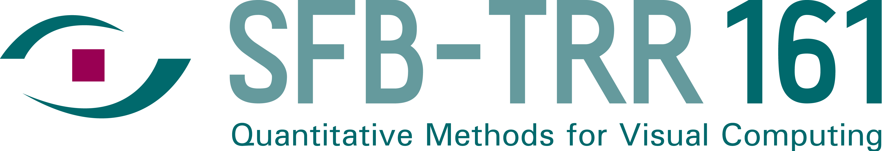

PlayStation
RoCo-23 · SPEAR-L-K1
SPEAR: Staged Pre-training and Expert Adapter Routing for Generalizable Optical Flow Learning
RbS-Score 0.211795
The NeurIPS 2026 challenge on robust dense correspondence has concluded. Final Optical Flow, Stereo Matching, and Scene Flow standings are frozen.
Dense correspondence has made remarkable progress on standard benchmarks. Although modern Optical Flow, Stereo Matching, and Scene Flow methods achieve strong performance under ideal conditions, their accuracy can degrade substantially under real-world visual shifts.
Robustness under realistic corruptions remains a challenge for the deployment of these methods in autonomous driving, robotics, and other safety-critical settings. RoCo-Spring jointly evaluates clean accuracy and corrupted robustness, targeting methods that remain accurate under camera noise, adverse weather conditions, blur, compression, and changes in illumination.
Each winner is the complete scored method with the lowest RbS-Score. Standings were frozen at October 1, 2026, 23:59 Anywhere on Earth.
RoCo-23 · SPEAR-L-K1
SPEAR: Staged Pre-training and Expert Adapter Routing for Generalizable Optical Flow Learning
RbS-Score 0.211795
RoCo-19 · CorrDrop-Stereo
Robust Stereo Matching under Missing Correspondence Evidence
RbS-Score 0.117581
RoCo-19 · Q4-Independent
Robust Scene Flow via Task-Wise Adaptation of Pretrained Stereo and Optical Flow
RbS-Score 0.241302
RoCo-19 · Combined quantitative tracks
Workshop papers
Robust Stereo Matching under Missing Correspondence Evidence
Robust Scene Flow via Task-Wise Adaptation of Pretrained Stereo and Optical Flow
RbS-Score 0.262759
The best complete methods in the frozen final leaderboard. Teams without a complete score are not included.
Frozen at
Associate Professor · University of Bologna · CVLab
Matteo Poggi is Associate Professor at the University of Bologna, where he conducts research on dense correspondence at CVLab. His work sits at the center of RoCo-Spring: stereo matching, optical flow, and depth estimation that remain reliable when the visual domain shifts. He introduced continual adaptation for deep stereo with MADNet, a modular network that adapts online from the images observed at deployment, without requiring new ground truth[1], and he has surveyed both the relationship between learning and binocular stereo[2] and deep stereo matching in the 2020s[3]. Recent work includes FlowIt, a global-matching optical flow architecture evaluated on Spring as well as Sintel and KITTI, which recovers motion together with explicit confidence and occlusion cues[4]. His invited talk will connect this line of correspondence research with the question at the center of the workshop: how Optical Flow, Stereo Matching, and Scene Flow stay accurate under realistic corruptions such as noise, weather, blur, compression, and changes in illumination.
December 12, 2026 · Room MR C4.3 · Sydney local time
| Time | Duration | Activity |
|---|---|---|
| 15:30–15:45 | 15 mins | Opening Remarks |
| 15:45–16:05 | 20 mins (15 mins talk + 5 mins discussion) | Oral Presentation: Team RoCo-19 |
| 16:05–16:15 | 10 mins | Coffee Break |
| 16:15–16:30 | 15 mins (10 mins talk + 5 mins discussion) | Oral Presentation: Team RoCo-23 |
| 16:30–17:00 | 30 mins | Invited Talk: Matteo Poggi |
| 17:00–17:15 | 15 mins | Open Discussion: Town Hall + Closing Remarks |
| 17:15–17:45 | 30 mins | Poster Session |
Spring provides high-resolution stereo video with left and right images at 1920x1080 px, together with dense scene-flow ground truth at 4x super-resolution. It includes bidirectional disparities for stereo and depth, disparity changes for Scene Flow, and forward/backward Optical Flow for both left and right views. This makes Spring a unified high-detail benchmark for Optical Flow, Stereo Matching, and Scene Flow.
RobustSpring extends Spring into a robustness benchmark with 20 realistic image corruptions, including blur, color changes, noise, quality degradations, and weather effects. The corruptions are applied to stereo video data and are integrated consistently over time, across stereo views, and with depth where applicable, enabling controlled robustness evaluation for Optical Flow, Stereo Matching, and Scene Flow.
Estimate a dense 2D displacement field between consecutive frames, assigning each visible pixel a horizontal and vertical motion vector.
Estimate a dense disparity map from a rectified stereo image pair, assigning each pixel the horizontal offset to its corresponding point.
Estimate dense 3D motion from stereo image sequences, combining per-pixel geometry and temporal motion into a single correspondence task.
Submit a rigorous analysis of robustness in dense correspondence, focusing on failure modes, method behavior, metrics, or evaluation design.
The competition has now concluded, and submissions are now closed. See you at the workshop :)
| Date | Milestone |
|---|---|
| July 2, 2026 | Website launch |
| July 13, 2026 | Development leaderboard opens for all quantitative tasks |
| September 25, 2026 | Workshop paper submission deadline (4–6 main pages) |
| September 30, 2026 | Final quantitative submission deadline |
| October 06, 2026 | Workshop paper author notification |
| October 15, 2026 | Camera-ready paper, code, and reproducibility package deadline |
| October 15, 2026 | Final evaluation, reproducibility checks, and award shortlisting |
| October 31, 2026 | Winners notified and workshop program finalized |
| December 12, 2026 | In-person NeurIPS Competition Track workshop · Room MR C4.3 · 15:30–17:45 (Sydney local time) |
The quantitative challenge has concluded and its leaderboard is frozen. The workshop is on December 12, 2026.

This event is supported by the SFB-TRR 161 Quantitative Methods for Visual Computing.
Shashank Agnihotri and Margret Keuper acknowledge funding by the DFG Research Unit 5336 – Learning to Sense (L2S). Margret Keuper acknowledges funding by BMFTR project TrackOpt (01IS24074A-D). Andres Bruhn and Victor Oei acknowledge funding by the Deutsche Forschungsgemeinschaft (DFG, German Research Foundation) – Project-ID 251654672 – TRR 161: Quantitative Methods for Visual Computing (B04, A07). Katrin Bauer and Andres Bruhn acknowledge funding by the Deutsche Forschungsgemeinschaft (DFG, German Research Foundation) – Project-ID 533085500 – Robust Optical Flow. Katrin Bauer and Victor Oei acknowledge support from the International Max Planck Research School for Intelligent Systems (IMPRS-IS).
Challenge email: roco-spring-org@googlegroups.com
GitHub Starter Kit: hmorimitsu/roco-spring-devkit